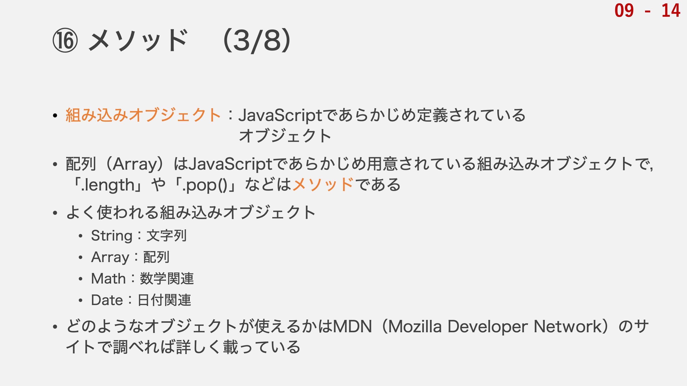
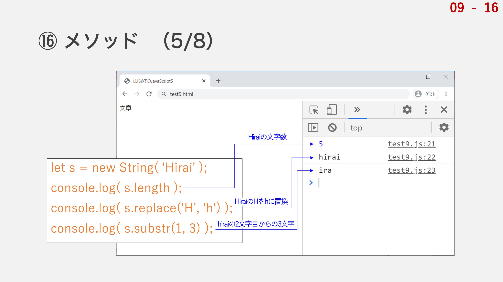
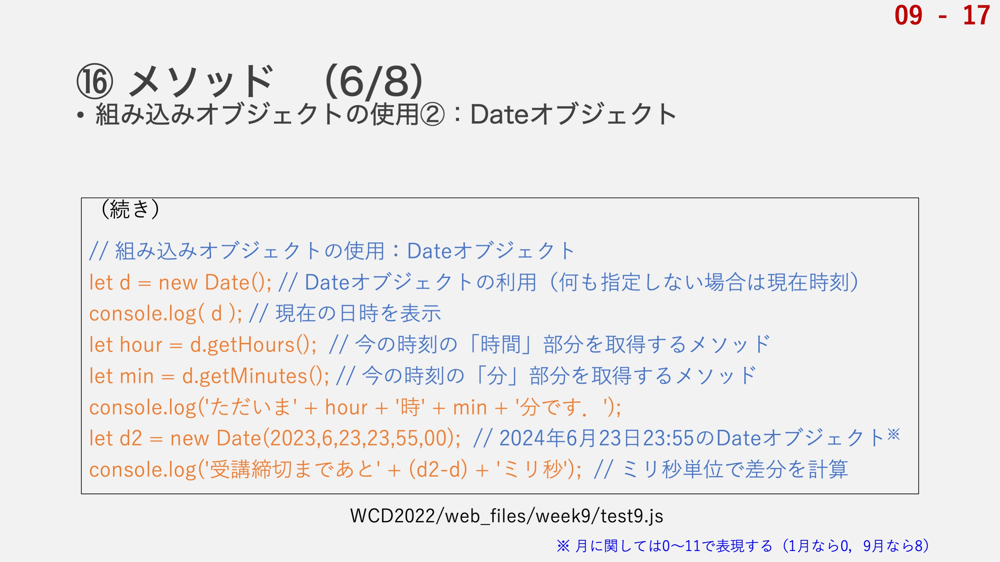
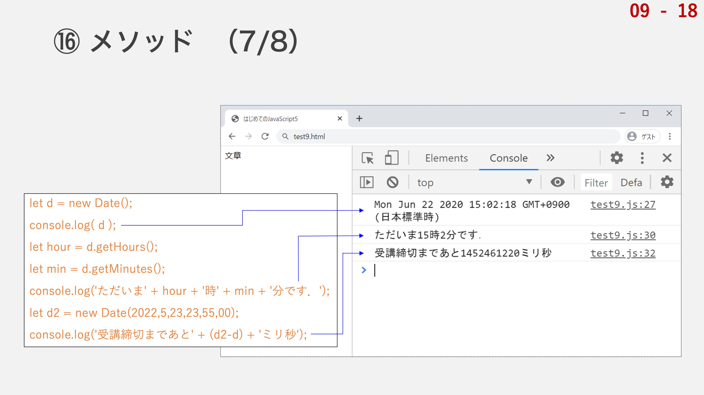
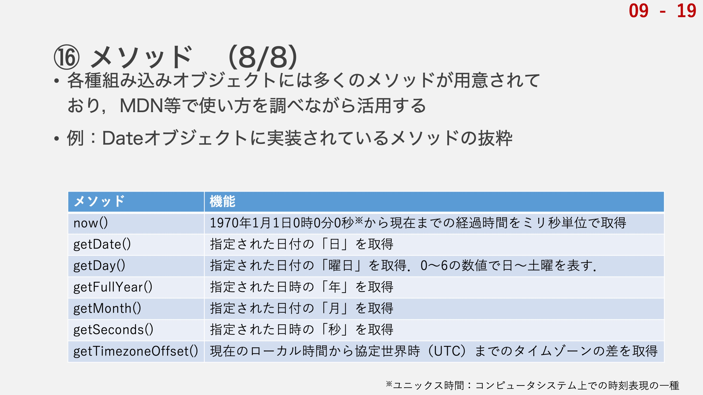

続いての項目は，メソッドです．
オブジェクトはプロパティ（名前）と値（データ）のセットで関連するデータを整理できる形で扱えました．
メソッドは，プロパティに対して関数（機能）を設定させたものです．この関数のことをメソッドと言います．
関数ですので，その処理の中でオブジェクト内の別のデータを参照するケースがありますが，そのようなときには「this.プロパティ名」と記述することでメソッド自身が属するオブジェクトのデータを参照できます．
実際にプログラムを書いて確認してみましょう．
ここでは，userという名前のオブジェクトを用意します．
nameというユーザ名に関するプロパティを用意し，それからgreetというメソッドを用意します．
メソッドは，関数ですので，「プロパティ」，「:」の後に「function()」と記述します．引数を使う場合には（）の中に引数の名前を書きます．
この辺りについて理解が曖昧な場合は関数の内容に戻って復習してください．
メソッドでは，関数名は必要ありません．プロパティの部分が関数名に相当するからです．この場合は「greet」ですね．
greetメソッドでは，console.logでメッセージを出力するだけの処理を行うこととします．
オブジェクトの定義が完了したら，メソッドを使ってみましょう．
オブジェクトの他のプロパティを参照するときと同様に「オブジェクト名.メソッド名(引数);」と記述することで実行できます．
引数を使わないメソッドの場合は「オブジェクト名.メソッド名();」だけで実行できます．
プログラムを書いたら実行して動作を確認してみてください．
このようにコンソールに「Hello Tanaka, from Hirai」と出力されていれば問題ないです．
今回は「userオブジェクト」というものを定義して，その中に「greetメソッド」を作りました．
greetメソッドでは，引数「to」を使用して処理をします．
最後の行で「user.greet('Tanaka');」と記述することで，「userオブジェクト」の「greetメソッド」に「引数'Tanaka'」を入れて実行します．
引数である'Tanaka'は，引数toに代入されます．
メソッドの処理の中では，console.logの中の「'Hello' + to + ', from '」で「Hello Tanaka, from 」となり，最後の「this.name」が「user.name」の値である「Hirai」に該当します．
自信が属するオブジェクトのデータを参照する際には，「this.プロパティ名」です．
少し複雑になってきましたので，しっかりとデータの対応関係を追って，納得した上で進んでくださいね．

オブジェクトやメソッドはさっきまでの例のように自分で設計できますが，JavaScript側ですでに定義されているものもあります．
そういったオブジェクトのことを組み込みオブジェクトと呼び，様々なメソッド（機能）が用意されています．
実はこの組み込みオブジェクト，皆さんはすでに使っていたんです．例えば配列は組み込みオブジェクトなんです．
配列を定義する際に，「var A = new Array(10);」のような記述方法を紹介しましたが，この「new オブジェクト名」というのは組み込みオブジェクトに該当するオブジェクトを新たに作成する際の記述方法です．
配列の機能として紹介した，配列の長さを取得するための「.length」や，末尾のデータを削除するための「.pop()」は，実はメソッドだったのです．
「.length」の方は()がついていないので組み込みオブジェクトのプロパティかもしれませんが，その辺りは設計によります．
配列について復習したい場合は以下のリンクから先週の資料に戻って確認しましょう．
JavaScriptでは他にも便利な組み込みオブジェクトがたくさんあります．
例えば，文字列型のデータを扱うSrtingオブジェクト，数学関連の関数を提供してくれるMathオブジェクト，日付関連の機能を提供してくれるDateオブジェクトなどです．
他にも組み込みオブジェクトはありますし，それぞれの組み込みオブジェクトの中にたくさんのメソッドが用意されているので，どのようなものがあり，どのような機能が使えるのかはその都度調べていく必要があります．
MDNというサイトで調べると詳しく載っています．
では，実際に組み込みオブジェクトを使ってみましょう．まずはStringオブジェクトからです．
test9.jsの続きにこちらのプログラムを記述し，動作を確認してみてください．
実は，Stringオブジェクトはこれまで当たり前のように使っていた文字列型の変数のことなんです．
むしろその逆で，今まで文字列型の変数として使っていたものの正体が実はオブジェクトだったということなんです．
これまでは「var s = ner String('~~~');」のような冗長な書き方はせずに，単に「var s = '~~~';」と書いていましたが，実はこれは，後者の書き方で書くことでJavaScript側で勝手にStringオブジェクトを使いたいということを解釈してくれていたんです．
配列の方も同様で，「var A = [1,2,3,4,5];」のように定義することで，暗黙のうちに配列オブジェクトを使えるようにしてくれていたというわけなんです．
こちらのプログラムが書けたらコンソールを確認してみましょう．

1行目はStringオブジェクトsの定義，作成ですね．
2行目から4行目の3行は全部コンソールへの出力です．
それぞれ，「文字列の長さ（文字数）の出力」，「大文字Hを小文字hに置換したものの出力」，「2文字目（インデックス1）からの3文字分の出力」となっています．
これらのメソッドを使うと，Web上の文字入力フォームにおいて，現在の入力文字数が何文字かを出力したり，すべて小文字で書かなければいけないようなフォームに大文字が入力された際に自動で修正するような機能を作ることができます．

もう一つ組み込みオブジェクトを使ってみましょう．
次に使ってみるのは，Dateオブジェクトです．
これは日付や時間に関連した機能を提供してくれるオブジェクトです．
こちらのプログラムを各自のtest9.jsに記述して動作を確認してみてください．
「new Date();」で()の中に何も書かないと，自動的に現在時刻に関するDateオブジェクトが作成されます．
それぞれのメソッドは，単純に情報を引き出すためのメソッドなのでそれほど複雑なものではないことがわかるかと思います．
特定の日付，時刻に関するDateオブジェクトを作成することもできて，d2はこの講義の受講登録締切時刻のDateオブジェクトです．
一点注意が必要なのは，2023年6月16日のDateオブジェクトを作成する際に，()の中には「2023,5,16」と書かなければならず，「月」のみが実際の月より1小さい標記となる点です．
どういうわけか，月に関してのみ「0」からカウントがスタートする仕様となっており，「0」が「1月」で「11」が「12月」となります．
このような奇妙な仕様はプログラミング界隈ではたまに観測されます．
複数の人物が別々に開発したことに起因することが多いように思います．

先ほどのプログラムを実行した結果のコンソールへの出力はこのようになっています．
Dateオブジェクトの時間のカウントはミリ秒単位（1秒の1/1000）で行われますので，特にデータを整理しない状態でDateオブジェクト同士の引き算を行うと，ミリ秒換算の時間差が計算されます．
この例の場合，講義の受講締切まであと「1452461220ミリ秒」ということがわかるわけですね．
ミリ秒で示されてもわからないので，「日，時間，分，秒」に換算する必要がありますが，そこは演習で取り組むこととしましょう．

組み込みオブジェクトには多くのメソッドが用意されていまして，その全部を講義内で紹介することはあまり意味がないことです．
このような組み込みオブジェクトがあるということだけ頭の片隅に置いておいて，いざ何かしらの機能が使いたいとなったときに調べて使えれば良いです．
調べる際にはMDN等の，Referenceを参照するのが効率的です．
MDNは日本語の説明も載っていますが，プログラミングをしていると，英語のReferenceのみしか存在しないツールも多くあります．
日本語に翻訳されているのはごく一部なのです．
そういうときに躊躇なく英語で調べられる程度の英語力は持っているべきですね．
こちらにDateオブジェクトに実装されているメソッドの一部を示していますが，MDNで調べていただければ，全メソッドについて知ることができます．